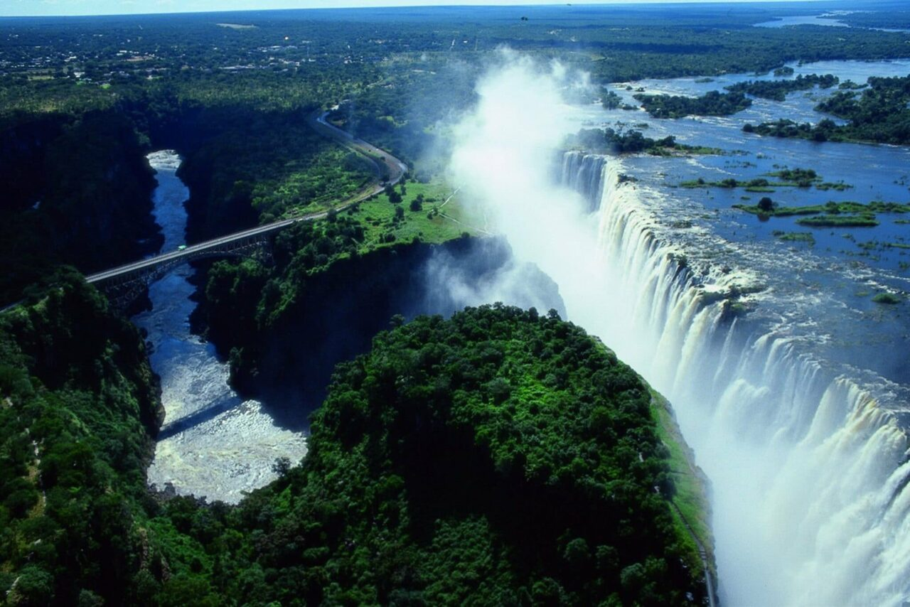

Data
- Country: Zimbabwe
- Population: 16 Million
- Area: 1,951 km²
- Altitude: 2,333 m (7,655 ft)
- Language:Shona
- Currency:Zimbabwean Gold
- Time Zone: UTC +2
Weather
- Temperature: 12 °C (average, cool highlands)
- Conditions: Partly Cloudy
- Wind: 10 km/h
- Wind Chill: